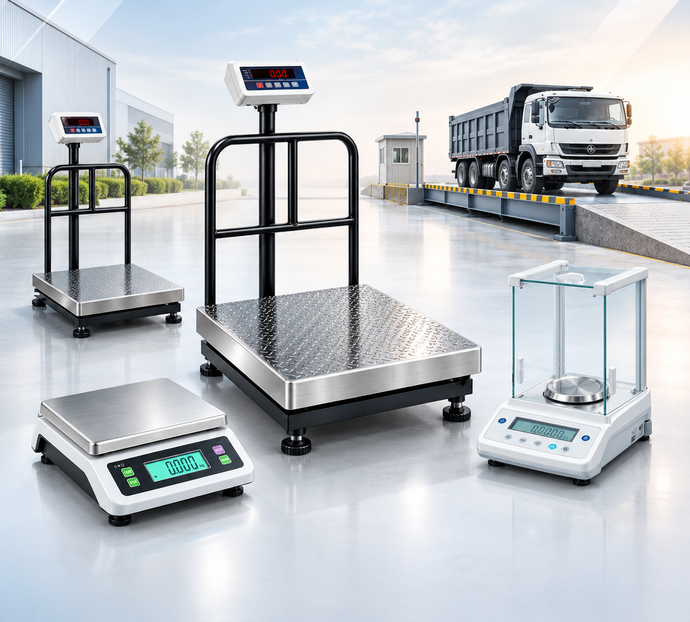
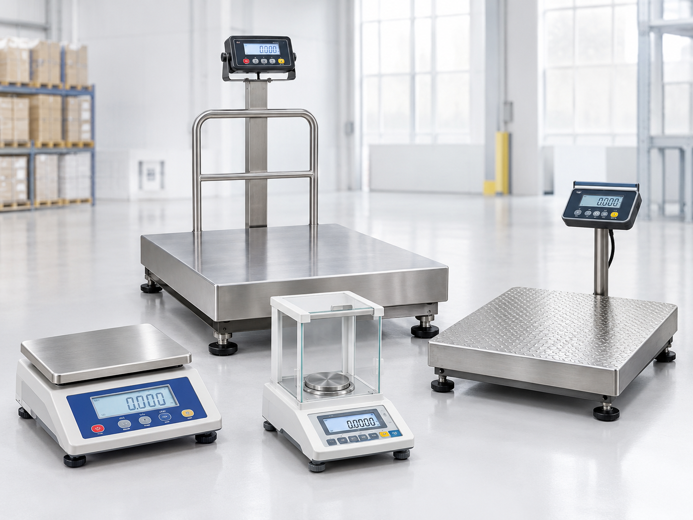

OUR FOUNDATION
Weighing Equipment Solutions
Supporting commercial and industrial weighing requirements with a range of electronic weighing equipment.
Your trusted partner for commercial, industrial and laboratory weighing solutions in Umbergaon, Gujarat.
Prime Systems specialises in the sales and service of electronic weighing equipment for commercial, industrial and laboratory applications.
From everyday weighing requirements to industrial weighing applications, we offer a range of weighing equipment designed to support different business needs. Our product portfolio includes platform weighing scales, table-top scales, laboratory balances and truck weighbridge solutions.
We aim to help businesses find suitable weighing solutions for their operational requirements, with product guidance and service support based on their equipment needs.
Scales for everyday business applications.
Solutions for industrial weighing needs.
Weighing equipment for laboratory applications.
Equipment for vehicle weighing requirements.
Exploring weighing solutions for businesses in Umbergaon and the surrounding industrial region.

Commercial, Industrial & Laboratory Applications
Every business has different weighing requirements. Understanding those needs is an important part of finding the right weighing equipment.
Prime Systems serves weighing equipment requirements through its range of commercial, industrial and laboratory weighing products, along with weighing equipment sales and service.
As we continue to learn more about our customers' requirements, our focus remains on suitable equipment, practical guidance and dependable service support.
Get in TouchSupporting commercial and industrial weighing requirements with a range of electronic weighing equipment.
A product range covering platform scales, tabletop scales, laboratory balances and truck weighbridge solutions.
Helping customers explore suitable weighing equipment and related service requirements.
Exploring weighing solutions for businesses in Umbergaon and the surrounding region, subject to service-area confirmation.
Explore weighing equipment for commercial operations, industrial environments and laboratory applications. Find solutions that match your weighing requirements.
 01
01
Electronic weighing scales for everyday business operations where practical, consistent weighing is essential.
 02
02
Weighing equipment for industrial operations, material handling and weighing requirements across different working environments.
 03
03
Laboratory weighing balances for applications that require careful measurement and equipment suited to the task.
Not sure which weighing solution suits your application? Talk to our team about your requirements.
Contact UsReliable weighing solutions backed by a focus on product quality, precision, and dependable customer support.

Weighing solutions for diverse business needs
Weighing equipment selected to meet the measurement requirements of commercial, industrial, and laboratory applications.
A focus on dependable equipment, practical usability, and consistent performance for everyday weighing operations.
Assistance with weighing equipment requirements and service enquiries to help customers choose suitable solutions.
Solutions for commercial weighing, industrial operations, and laboratory measurement requirements.
At Prime Systems, we focus on understanding your weighing requirements and helping you find suitable solutions for your commercial, industrial, and laboratory applications.
Talk to Our TeamWe aim to understand customer needs and provide helpful guidance throughout the equipment selection process.
We focus on suitable weighing equipment for dependable day-to-day commercial and industrial operations.
We consider your weighing capacity, working environment, and application needs when discussing suitable equipment.
From commercial weighing scales to industrial and laboratory equipment, let's discuss your requirements and find a suitable solution for your business.